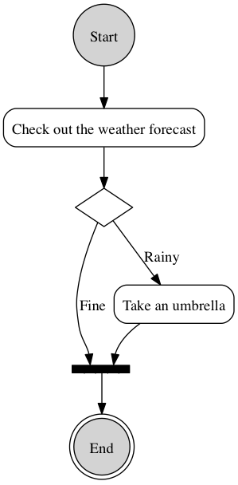

Emacs Org Mode Galleries
Table of Contents
1 Overview
- This file demonstrates what Emacs Org-Mode can do.
2 Hyperlink
- emacsOrgModeGalleries.org
- Original text file.
- emacsOrgModeGalleries.html
- Exported HTML file.
3 Table
3.1 Column Border
| Number | String |
| 1 | One |
| 2 | Two |
3.2 Row Index Number
- #+TBLFM: $1=@#
| Row Index |
|---|
| 2 |
| 3 |
| 4 |
3.3 Column Formula
- #+TBLFM: $3='(concat $1 $2)
| String 1 | String 2 | |
|---|---|---|
| 1 | One | 1One |
| 2 | Two | 2Two |
4 Export with <pre> tag
| Number | String | | 1 | One | | 2 | Two |
5 Inline Image

UMLActivityDiagramGraphviz.png
- Source code for this diagram is available in the next section.
6 Source Code
digraph UmlActivityDiagram {
node[shape=circle, style=filled];
c0[label="Start"];
node[shape=record, style=rounded];
r1[label="Check out the weather forecast"];
r2[label="Take an umbrella"];
bar1[shape=record, label="{{ <b1>|<b2>| <b3>|<b4>| <b5>}}", style=filled, fixedsize=true, height=0.1, color=black, fillcolor=black];
r2->bar1:b4;
node[shape=diamond, style=""];
d1[label=""];
c0->r1;
r1->d1;
d1->r2 [label="Rainy"];
d1->bar1:b2[label="Fine"];
node[shape = doublecircle, style=filled];
dc1[label="End"];
bar1:b3 -> dc1;
}
Created: 2013-07-17 Wed 08:28